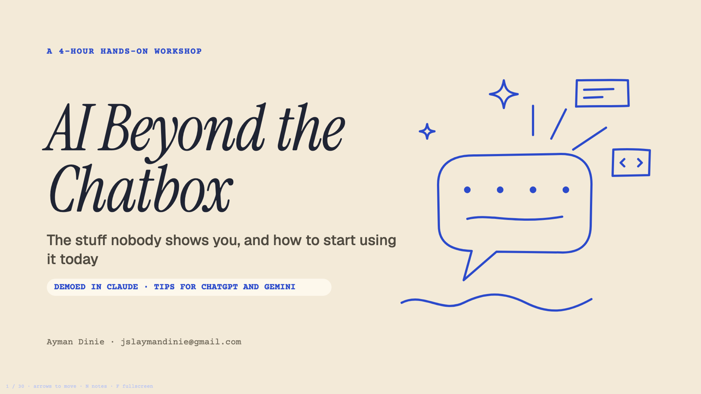
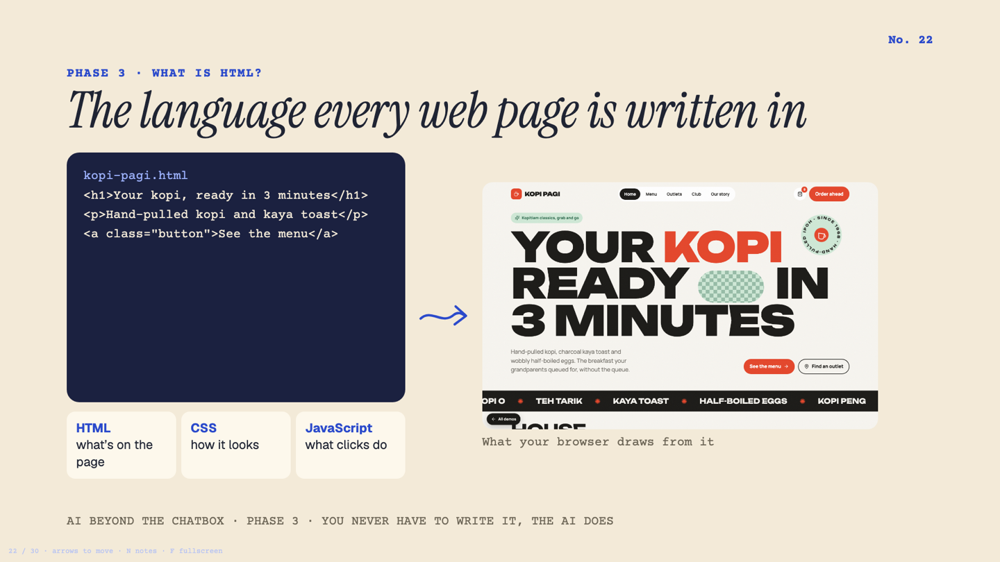
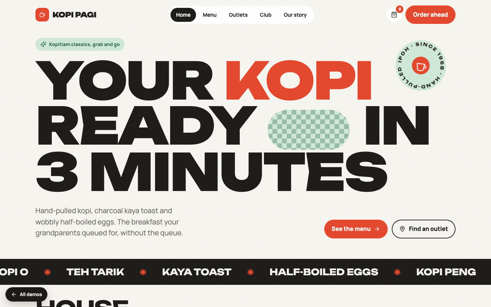
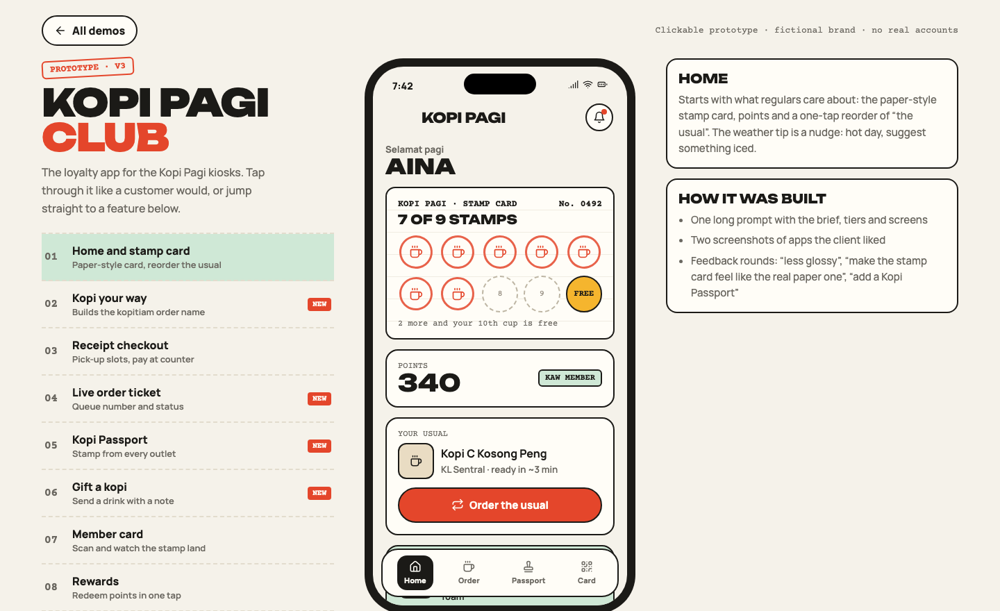
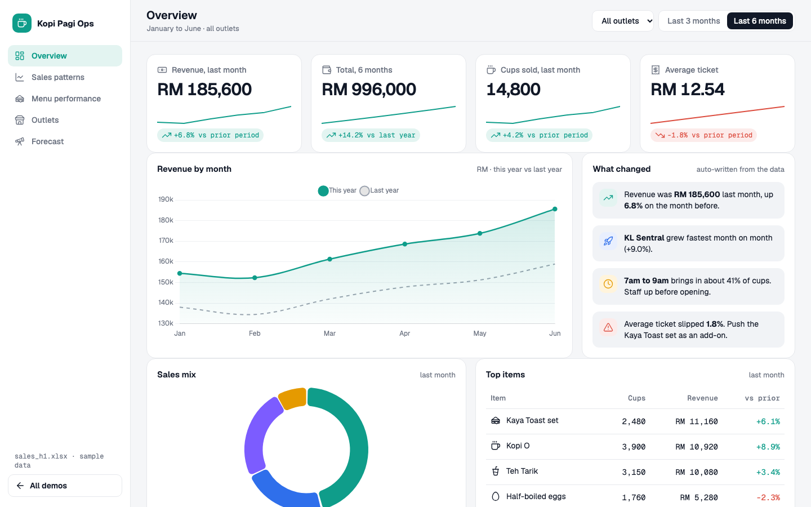
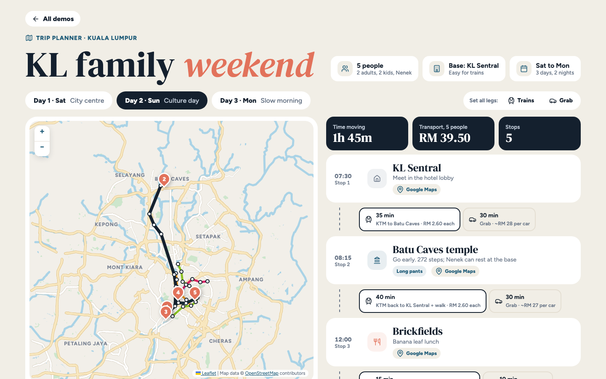
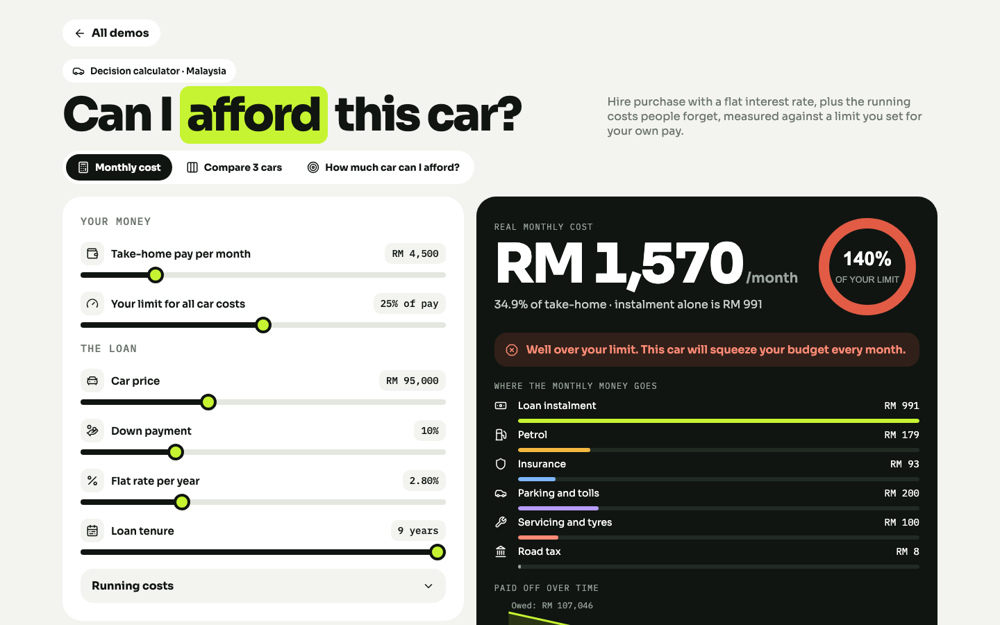

A 4-hour hands-on workshop · Ayman Dinie
Everyday uses of AI at work and at home, and how to turn a chat into something you can open, click and send. Here are the slides and five live examples, all made with AI.

The slides
See what AI can do, learn to brief it well, then build and share one small app of your own.
Arrow keys or click to move · F for full screen
Open the slides →Quick explainer
HTML is the language every web page is written in. It’s a plain text file with tags that tell your browser what’s a heading, a paragraph or a button.
You never have to write it. Ask an AI for “one HTML file” and you get a single file that opens in any browser, on any phone or laptop, with nothing to install. Keep it on your laptop and only people you send it to can see it. Upload it, like this site, and anyone with the link can open it.

Live demos
Each one is a single HTML file. Click a screenshot to open it, then use “All demos” to come back. All brands and figures are fictional.

Brand website · 5 pages
A full site for a kopitiam kiosk brand: home, menu, outlets, loyalty club and brand story.
Prompt idea: “Website for a heritage kopitiam kiosk. Office workers grabbing breakfast. 3 sites I like attached. Bold type, kopitiam tiles and marble. Pages: home, menu, outlets, club, story.”
Open the website →
Clickable app prototype
What a client clicks through before any developer starts: a loyalty app that feels like the real paper stamp card.
Prompt idea: “Phone prototype of our loyalty app. Stamp card, order ahead, rewards, member QR. Screenshots of 2 apps the client likes attached. Not glossy. Make it feel like the paper card.”
Open the prototype →
Data visualisation · 5 pages
A spreadsheet turned into a working dashboard for an ops manager, with insights written from the numbers.
Prompt idea: “Here’s sales_h1.xlsx. Dashboard for the ops manager: KPIs, trend vs last year, busy hours, menu matrix, outlets and a 3-month forecast. Use only numbers in the file.”
Open the dashboard →
Planner on a real map
Three days in KL for five people, on a map drawn from OpenStreetMap data with the LRT, MRT, monorail and KTM lines.
Prompt idea: “Plan 3 days in KL for 5 incl. a grandparent. Base at KL Sentral. For every leg give train vs Grab with time and fare. Show it on a map.”
Open the planner →
Decision calculator
Malaysian hire purchase plus the running costs people forget, measured against your own limit.
Prompt idea: “I earn RM 4,500 and want a car under RM 120k. Malaysian flat-rate hire purchase. Include insurance, road tax, petrol, parking. Compare 3 cars and tell me my max price.”
Open the calculator →